DVCS Workflows
Zachary Kessin zkessin@gmail.com @zkessin
Introducing Git and HG
This book is not about version control. That is a radical statement as it says "Using Git and Mercurial" on the cover, but its not about git or mercurial, nor is it about software development, though most of the readers will be software developers. What this book is about is teams.
Its not just software, many things worth doing these days are done by teams of people. While most people who use GitHub are programmers and will use it to write programs.
GitHub can be used (And for those of you who know nothing about knitting, to say knitters are passionate about what they do would be an understatement)
Thanks
This book was envisioned as a collaborative project. I wanted to hear how other people have collaborated on projects, find out what works and what doesn’t.
In developing this book I have to thank several people, First of all Simon St Lawrence and Andy Oram at O’Reilly Media who have supported me.
Matthew McCullough of the GitHub training group has offered me a number of suggestions as well as promoted this book within GitHub.
In addition a number of people have sent me pull requests with changes. Contributors are listed here in alphabetical order by GitHub user name.
-
breskeby - Rene Groeschke
-
kirean - Erik Andersson
-
rkessin - Richard Kessin
Tools for Collaboration
When working with a group on a project, you need to have a way to integrate the contributions of various team members.
It is possible to write in software like MS Word and email copies of the files around between collaborators. However this is a risky practice. As revisions of the file move around, the number of versions of the file will go up. Trying to ensure that changes are not overwritten by mistake becomes an increasingly difficult task.
Given enough contributers and enough versions of the file it is inevitable that someone’s changes will get lost or that an older version of a paragraph will suddenly return when someone uses the wrong version of a file.
Sharing the file on a site like dropbox is also not a solution because if more than one person wishes to edit at the same time it is impossible to know which version of the file will be there when everyone is done.
Les bons comptes font les bons amis
The quote in French means "Good accounts make for good friends" and is fitting. As business venture needs a good system to track its money, and a project needs a good system to keep track of the work done by its members.
A project can be any form of creative work, a computer program, a Novel, this book, a set of knitting patterns and so forth. Most projects will consist of one or more files that will reside on the computers of the project members.
As an example take this book. It consists of around 20 or so files that contain the actual text of the book, one for each chapter or section, and then a bunch of other files that contain things like the images that are included and a few random others.
As the book is being written we want to be able to share those documents between the writers, reviewers, editors, and in this case the world at large. Other projects will be shared in different ways.
In order to make this collaboration work we need two things. First a way to share the documents between the project members, and secondly a set of rules on how those contributors will work together.
It is all fine and good to say that it is possible to know if two users have the same version of a file, or how their copies differ, but if you have 20 people attempting to assemble a complex project you need a way to organize people so that tasks can be managed.
This book will attempt to lay out how to construct a system that will work for your team, by showing how different teams have faced these problems and mapping out their solutions.
Version Control
Thankfully various computer programmers over the years have faced this problem and realizing that it was a problem, built tools to try and solve it. These tools collectively are known as "Version Control Systems" Or "Revision Control Systems". The history of Version Control systems dates back to the 1970’s and has generated significant progress.
The current major Version Control system is called "git" and was created by Linus Torvolds, when he was unable to find that existing systems did not meet the needs of the team that was developing the Linux kernel.
GIT
GIT is a very powerful tool that has a lot of features, but most of what is needed to work and collaborate with others can be done with a small enough to learn pretty quickly. In addition while many git tutorials show how to use git from a command line there are now many very nice graphical tools to enable the use of git without having to ever see a command line if you don’t want too.
The way version control systems work is they track files and changes to those files. So it is possible to see the history of changes to a file and when each line was last changed and by whom.
This allows project members to say that they all the same version of a file, and to ensure that everyone’s changes have been accounted for. Git allows users to ensure that they have the same version of the project files by applying a mathematical function called SHA1 to the files in a project. At any given time the files committed to a project will have a unique SHA1 key.
Furthermore, if two members of project team have a project directory with the same SHA1 key they can be sure that the files in the project are the same.
Every time files are changed in a project git will create a new SHA1 key for the project. So if Bob and Lisa want to know if they have the same files they do not have to check every file for changes they can just compare their keys. If they match they know that the files are the same.
However if they are not the same git can look at the history of the files and figure out what has changed. So if Bob has sent Lisa file for editing and she made some changes, git will use the SHA1 keys to compare the history of the files. In this case it will see that Bob’s files are an ancestor to Lisa’s. It can then know exactly what changes Lisa made and allow Bob to safely merge her changes. We will see an example of how to do this in Pull Request.
SHA1
SHA1 is a cryptographic hash that when you apply it to data will return a 40 character string that looks like this, 3fee35069bb9591edc3ab76f44b69c7b2d44be88.
|
Note
|
you can not recover the original files from that hash, SHA1 is strictly a one way function. |
In general you will see a shorter form that looks like 3fee350. In this case git will use as short a version of the string as it can as long as it is unique. Git does this because the developers realized that having to use a 40 character string would be difficult for users.
The details of how SHA1 turns arbitrary data into a hash are rather technical. If you want to know more about how SHA1 works you can look on WIkipedia.
The thing to remember is that the chances that two SHA1 keys will be the same while the files are not is 1:1048. That is close enough to 0 for me.
GitHub
The use of git is greatly enhanced by GitHub a company that was founded in 2008 to facilitate using git to collaborate on software projects. Since the GitHub has grown to become the most popular site for building collaborations in the open source software community.
GitHub is itself a distributed company with its team spread out all over the place so they not only develop the tools for working with distributed teams, they use them ever day.
Using Git
For developers who are used to centralized version control systems like CVS or SVN transitioning to GIT requires a bit of a mental transition. Unlike SVN a commit in git is a two phase operation. When you do a git commit you are committing to your local repository. It does not publish those changes to anyone else. This has several benefits, first of all you can commit work in progress without woring about "breaking the build" so if you may want to roll back some changes you can commit to a branch on your local repository. It also means that you do not need Internet access to commit to your local repository. So if you are say writing a book on your laptop while on an international flight (which is where this is being written) you can check in your changes to a local repository and then push them to a shared repository later when you flight lands.
This chapter is not a full introduction to git. There are several excellent books on that including Version Control with Git by Jon Loeliger and McCullough which is published by O’Reilly. That book is an excellent introduction to git. In addition there are several other books out there as well as videos which can be found on sites like youtube and infoq.
In addition this chapter assumes the use of git from a command shell such as bash. For those who are happy using a command line this can be a very productive way to work. But do not assume that it is the only way to work with GIT or even the "correct" way. The command line is an effective way to work, but so are a number of Graphical git clients which are covered in GUI Git Front Ends. Use which ever makes most sense to you. In addition it is quite possible to use both the command line and one or more graphical tools.
When building this book I have been using command line git tool, and the Emacs git interface and the GitHub for mac program. In this case I used the emacs client for most commits and the GitHub for Mac for handling pushing and branches.
Creating a repository
To create a repository use the command git init which will initialize an empty git repository. Once a repository has been created files can be added to it and all other operations performed.
The other way to create a repository is by doing it with GitHub or other remote hosting service. Once you create the repository on GitHub you then clone the repository onto your local computer.
Basic Operations
The first thing you will wish to do after creating a new repository is add some files for it to track. A repository without any files is not particularly useful, anymore than any other file system without files.
To add files use the command git add <file> you can also add more than one file or a directory structure in one command line.
Committing Changes
Once you have added files to a repository you will need to commit changes that have been made. to do this you use git commit. Git will open an editor to let you create a commit message. If you want to supply one on the command line use git commit -m "My Commit Message" file.
|
Warning
|
unlike CVS and SVN if you do a commit in a subdirectory it will commit all files in the repository, not just those in the current repository. |
Branching and Merging
Git makes dealing with branches much easier than svn or the like. Many git users will create a new branch for each feature. This also allows you to easily throw away changes did work well by simply abandoning the branch.
To create a branch use git branch <branchname> this will create a new branch, however it will not change repository to the new branch, do do that do git checkout <branchname>. Then edit and commit files as normal.
A git branch can exist on the local repository only, or on a remote repository. Clearly some branches such as a throw away experiment in the code probably will only exist on a local repository. On the other hand a feature branch may well exist on both local and remote repositories. (The details of this will depend on how the team chooses to do things)
|
Note
|
TODO how to make a remote branch |
When you wish to integrate the changes from a branch into the master branch do "git checkout master", which will bring you back to the master branch. To bring the changes from your branch into the master branch back do git merge branchname which will copy everything into the master branch.
In the case we have just covered the master branch has not changed while development was moving on the side branch. So at all git has to do is what called a "fast-forward" where it can simply move the master branch ahead so that the current pointer for the repository points to the head commit for the branch.
In the case where two branches are being merged where one is not a direct ancestor of the other then git will have to do its best to merge the two groups of files. If there is direct conflict then it will force the user to figure it out.
Conventions for Branching
Once again there is no one single convention for how to use branches. Some groups will use them more than others. At GitHub they have the convention that anything in the master branch can be shipped at any time.
In order to maintain the quality of code in the master branch all code must be sent threw a code review prior to being merged. This is done via a pull request.
In general it would work like this. Alice wants to add a new feature to an app. She will pull the most recent version of master from the central repo and then create a branch for her new feature, lets call it writing_desk and write her code. When she is done she will send a pull request to Lewis from the writing_desk branch.
Lewis will then review her code and send her back a pull request that may contain any changes he thinks should be made. This may then repeat a few times until the code is ready at which point there will be a final commit which will include a comment something like SHIP IT. At this point Alice will merge her new code back into master.
Undoing changes
If you have made a change to a file and wish to undo it for some reason you can undo that from the command line with "git reset". You can of course also do it from any of the graphical tools.
Removing Files
Often in the course of development a file or group of files will become irrelivent. Git of course allows you to remove the file. To remove a file from a git repository use git rm filename Then commit. It will of course not remove the file from the history of the project, nor from other branches.
To move a file use git mv oldfile newfile which will remove the old file and add the new one, but will be able to preserve history.
Remote Git
What makes git so useful is that it has such wonderful features for working with remote repositories. There are for major commands for working with a remote repository. In this case a remote repository can be a different directory on the same computer or on a different computer somewhere else, or even on a thumb drive.
Clone
To copy a remote repository use git clone this will copy the repository along with all all of its history to the local system. By default it will clone the "master" branch.
You should use clone when you want to copy a repository onto a computer for the first time. After that you will use pull or fetch to get the most recent versions of files.
Push
If you clone a remote repository and then make changes to it you will probably want to return those changes to that repository. To do that use git push which takes changes from the local repository and copies them to the remote repository. In order to do this you must of course have rights to write to that repository.
A push can not merge code, so if the advance is not a fast forward then it will be rejected. So before you do a push you may need to do a pull.
Pull
A pull is not quite the opposite of a push. A pull will take code from there and move it to here. However unlike a push a pull will merge the code together. By default a pull will merge code into the current branch. In many cases it may make sense to create a throw away branch, pull into that, do any merging that may be required then merge it back into the development branch.
Fetch
A git fetch is similar to a pull in that it will fetch new commits from the remote repository. Unlike a pull a fetch will not do any kind of merging of remote data with your current branch.
Pushing and Pulling
In order to move a set of changes from one repository to another there are two options. You can push or pull the changes. A push takes the changes in the current repository and merges them into a foreign repository, which can be on a remote computer, or just a second directory on the same computer.
The other option is to do a pull which takes changes from another repository and moves them into yours.
In both cases these operations preserve the complete history of commits from the source repository.
In addition these operations can be be repeated. So Ann can pull changes from Bob who has pulled changes from Charlie, the final repository will have all three sets of changes. This is very different from sending a patch file where there is no change history.
A Pull Request
Of course if Ann is going to pull changes from Bob she needs a way to know that she should pull his changes. If Ann and Bob are sitting next to each other Bob may just say to Ann "Ok pull my changes" and let her know the URL of the repository and which branch the changes are on. You can push or pull from any local branch to any remote branch.
However if you are more than three or four people and are not sitting all in one place you will probably want a more formal way to do this. To support this GitHub has created a formal idea of a "Pull Request" which is a formal way for a user to let another user know that there are changes to be integrated.
If Ann has changes that she wishes Bob to take into his repository via GitHub (or bitbucket) she will go to the web site for her repository on GitHub and then select which branch contains her changes and of course who she wishes to send the change request too.
Bob will then be notified by GitHub that he has a pull request pending. GitHub notifications can be configured to run over email, threw the web site or via the API or a mobile app.
Bob will then have a chance to review the changes that Ann made and integrate them into his three or reject them.
All of this can also be done via the GitHub API, but that is somewhat beyond the scope of this chapter.
To illustrate let us use an example from the writing of this book. I have published this book on GitHub and user breskeby noticed a typo in one of these files. He had forked the repository and committed his change. You can see this in this graph. His change is the lower line in blue.

After committing his changes breskeby sent me a pull request with his change. In this case you see that the change he has sent to line 3. My text is in red. While his corrected text is bellow it in green.
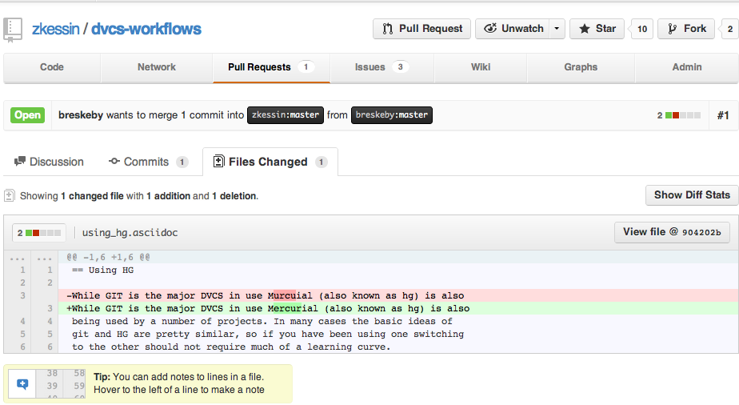
In this case I chose to merge the changes into the text and now the network graph looks like this. Notice that in this graph the commit from breskeby (in blue) is now in the zkessin band of the graph as those commits are now also in my repository.
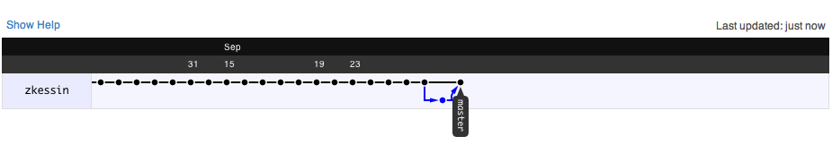
A while latter the graph looks like this graph. Notice here that there are further commits from me. In addition there is a new commit in green from user kirean which has not yet been merged into my repository.
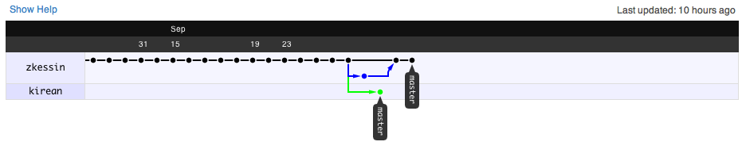
If I look at the graph from kirean’s repository it will look like this. There are a few things to note here. First of all his changes are in the top band in black, while mine are bellow in blue. Secondly the trunk up until where the two repositories diverge is shown in his repository. Even thought I made those commits since they have been copied into his copy of the repository they are shown there.
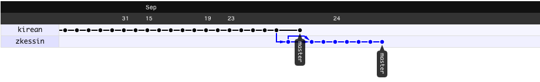
Using HG
While GIT is the major DVCS in use Mercurial (also known as hg) is also being used by a number of projects. In many cases the ideas of git and HG are similar, so if you have been using one switching to the other should not require much of a learning curve.
|
Note
|
HG is the chemical symbol for mercury, so that is the short name. All those of you who remember high school or college chemistry class knew that. |
To create a repository in HG create a directory and use the command hg init. This will create an empty hg repository to which we can add files.
Most of the commands to work with HG are pretty similar to GIT. So you can add files with +hg add file* or commit with +hg commit " and so on.
Sharing HG Repositories
If we want to share that repository we can run the command hg serve which will open a web server on port 8000 which we can use the interact with the hg repository.
The hg serve command will produce a web page that looks a bit like the following image, with a history of the repository.
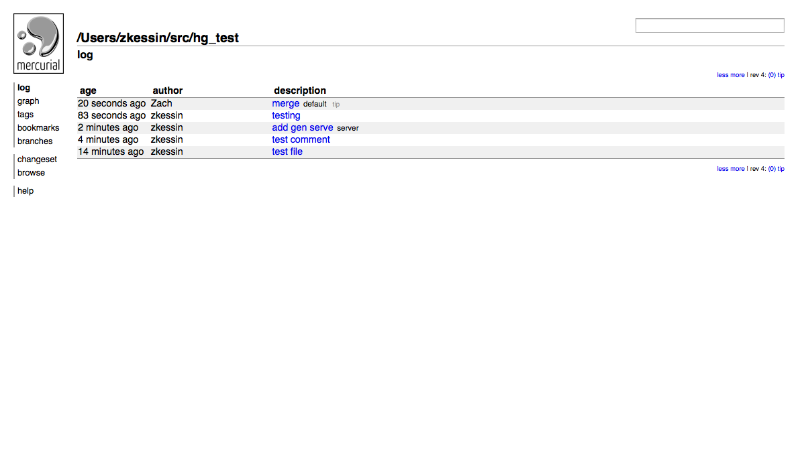
The nice this about this web page is that for free you get a number of nice features, that can help you manage a repository.
If you want to see a graphical version of the network of commits you can use the graph option which will give you a screen that looks like this image. Here you can see the results of a repository where there was a branch and a merge. With the side branch in green.
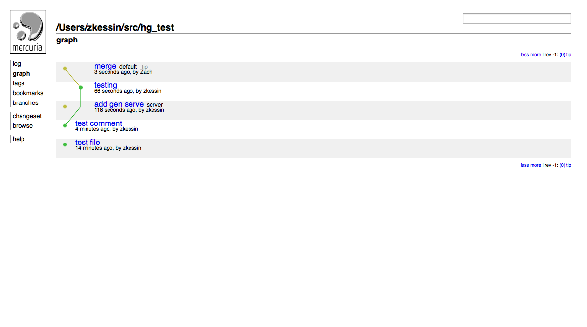
NOTE: run +hg serve+ will by default not run in the background but keep logging to the terminal in the standard, HTTP log format. so run it on a spare tab on in a session with screen or tmux. listening at http://Galileo.local:8000/ (bound to *:8000) 127.0.0.1 - - [15/Sep/2012 21:50:31] "GET / HTTP/1.1" 200 - 127.0.0.1 - - [15/Sep/2012 21:50:31] "GET /static/style-paper.css HTTP/1.1" 200 - 127.0.0.1 - - [15/Sep/2012 21:50:31] "GET /static/mercurial.js HTTP/1.1" 200 - 127.0.0.1 - - [15/Sep/2012 21:50:31] "GET /static/hglogo.png HTTP/1.1" 200 - 127.0.0.1 - - [15/Sep/2012 21:50:31] "GET /static/hgicon.png HTTP/1.1" 200 - 127.0.0.1 - - [15/Sep/2012 21:51:06] "GET / HTTP/1.1" 304 - 127.0.0.1 - - [15/Sep/2012 21:51:06] "GET /static/style-paper.css HTTP/1.1" 304 - 127.0.0.1 - - [15/Sep/2012 21:51:06] "GET /static/mercurial.js HTTP/1.1" 304 - 127.0.0.1 - - [15/Sep/2012 21:51:06] "GET /static/hglogo.png HTTP/1.1" 304 - 127.0.0.1 - - [15/Sep/2012 21:51:06] "GET /static/hgicon.png HTTP/1.1" 304 -
You can also use the server to clone a repository by simply typing hg clone URL which will pull the changes.
In terms of how to add files, like in git you use hg add <files> followed by hg commit and like in git the -m option will let you set the commit message.
If you made some changes that you don’t want to keep you can use the hg revert <files> to roll one or more files back to the last commit. When you do this hg will save any files you rolled back with the ending .orig so that they are not lost.
DVCS Cloud Hosting
One of the nice things about using a DVCS is that there are a number of very mature cloud hosting services that can be used to host your code. These services provide an easy way to share project files with team members as well as tools for managing those projects. Many of these services will in addition to hosting a GIT or HG repository will also include features like a wiki or issue tracker that are not directly related to the DVCS but can be very useful for management of a project.
In addition using a cloud hosting service provides an automatic off site backup, which can provide an important level of safety for a small company that might not have procedures in place for backups or disaster recovery.
GitHub
The 10,000 pound gorilla of the DVCS hosting world is GitHub. This is for a good reason, GitHub has been leading the effort to create new and innovative features for collaborative development. In addition GitHub has become the social network for programmers, and the central place for open source development, having taken that crown from Soruceforge several years ago.
|
Note
|
Several people from GitHub provided suggestions and support for the writing of this book. |
GitHub has become a leader in the field for a number of reasons. But one of them is that they practice what they preach. GitHub is very much a distributed company with people all over the world. So before they release tools to the world, they have used them internally. In addition their internal use of these tools is not just the standard run threw QA testing but actual use when things have to get done.
Community
One of GitHub’s goals is to provide a place for community of developers. There are a huge number of open source projects on GitHub (Including this book) that can be forked and downloaded. In many ways GitHub is providing the "View Source" feature for the current decade.
If your goal is to build a public project GitHub can form the natural home for your project. Placing it on GitHub will allow potential users to find, follow and contribute to your project.
TODO: Expand
GitHub API and tools
In addition GitHub provides a very robust API that allows developers to create applications that integrate with GitHub. So for example when building applications with PhoneGap it is possible to point PhoneGap at the correct GitHub repository and then have PhoneGap simply pull the correct files from GitHub.
When you want to use the GitHub API you have to give the application permission to use it. So the API will also allow access to your private repositories.
Since this API is public there is no reason that a developer can use this to automate part of a work flow. for more details see Using the GitHub API.
Features
GitHub has an amazing set of features, and between when I write this and when this book is published they will probably introduce a bunch more. So this section will not be able to cover all of the features of GitHub. However there are some highlights to know about.
First of all if you are viewing a file in Markdown or Asciidoc it will render the file for you. You can see raw text by clicking the Raw button.
It will also render most programming languages in a way that programmers will be used to seeing them in their editors. So keywords will be highlighted and so on.
If you want to make a simple edit to a file in a GitHub repository and do not wish to clone it to your local computer, edit the file and push the result back up. You can use the Edit button make a change and then commit it to the repository directly from the web page. This is not the best way to write code, it is very useful if you want to do something simple like fix a typo in a comment.
If you want to know where each line of text comes from click the Blame button which will show the file with the commit information. So that for each chunk of text you can see who committed it most recently and when.
The History button will allow you to see a chronological view of the commits to a file.
Pricing
GitHub is a business and of course it costs money to run, so it should come as no shock that they charge for hosting. In order to build community public projects, like this ebook, are hosted for free. However private projects cost money to create. Bitbucket’s plans are priced by number of repositories. For details of what plans are available look at GitHub Billing which will contain the current information.
At the time of this writing GitHub charges $7 a month for up to five repositories. If that is not enough then there are a number of plans that range up to $50/month for 50 repositories. (If you need more contact them).
|
Note
|
Prices are correct as of when this was written. They may change in the future. |
GitHub Enterprise
If you are a a larger company and wish to have your source code behind your firewall then using the GitHub.com site will not work for you. The problem is that you may wish to have the same features as the public GitHub, including the API, and all the user interfaces of GitHub.com .
The GitHub folks have a plan to help you in this case in GitHub Enterprise. This is a commercial software that runs as a virtual machine on your network. This supports a number of popular virtualization technologies including VMware and IBM Power.
GitHub Enterprise costs $21/user/month, but user licenses come in blocks of 20. So expect to pay $5,000 per year at a minimum to use this software.
Bitbucket
In some ways Bitbucket is a clone of GitHub, however it has a few options that GitHub lacks. First of all it support HG in addition to GIT so if your team wishes to use HG it is a strong possibility. In addition while GitHub offers free public repositories it does require you to pay for private ones. With Bitbucket you can have as many private repos as you want, however you can only share them with up to five other people before you have to pay for hosting. In addition Bitbucket allows unlimited repos with all plans but limits how many people you can share with. If you don’t need community or to share with more than a few people Bitbucket can be a good option. For the case of a lone developer who just wants off site backups this can be a good option.
Features
Pricing
Unlike GitHub, Bitbucket charges you not by how many repositories you have but based on how many people you wish to share them with. If you wish to share you’re repositories with five other people or less, total. Then you can use their free account. If you want to share with more than 5 people they have a plans that start at $10/month for up to 10 users and run up to $200/month for an unlimited number of users.
|
Note
|
Prices are correct as of when this was written. They may change in the future. |
If you are a student you might be eligible for a free unlimited account.
Stash - Enterprise Bitbucket
There are of course other git and hg hosting repositories out there, and you can find them via a google search easily enough. Of course you can also host your own git repo on your own server, which could be internal to your office or on a co-located or cloud host.
Work flow Planning
Git and HG solve part of the problem of how can a team work together and keep everything in sync. Which is to say that they solve the technical part of the problem. Of course these tools are only as good as the teams that use them. If used badly they can make a very well regimented mess where team members have histories of what they have done but trying to figure out how it all fits together is a nightmare.
To avoid this a team needs clear guidelines on how and when to integrate merges. Those guidelines along with the ideas of how to use GitHub form a workflow.
To figure out what type of work flow several questions will have to be asked. There are several attributes of a project and a team that have to be asked as shown on this table. Of course this table is only a guide, your work flow must match the needs of your project and team.
| Team Members | Well Defined | Amorphous |
|---|---|---|
Team Location |
Distributed |
Co Located |
Time Frame |
On Going |
Limited |
Team Size |
Large |
Small |
Leadership |
Formal |
Informal |
Repository Access |
Public |
Private |
Of course many projects will hit somewhere in the middle on one or those questions. The Linux Kernel team is probably pretty well defined at the core but may be a bit amorphous at the edges. Each work flow presented here will start with a version of this chart for reference.
It should also be noted that a work flow does not have to stay the same over the course of a project. If three friends decide to create a startup when they first start it will probably be three people with laptops writing code late into the evenings over Pizza. If they are successful the team will grow and they may find that what they have been doing so far does not work well for them. In this case they will want to adapt to a new setup.
The advantage of a DVCS is that these kind of changes are at least from a technical point of view pretty simple to handle. Repositories can be cloned and merged pretty much at will. At worst team members may have to change the origin of their repository, or to archive their current repository and clone it anew from a central repository.
Note: It should also note that I have not defined what is meant by "Large" and "Small" in the context of a team. I am assuming a more or less common sense definition in terms of the evolution of a project.
In addition different work flows will differ for public and private repositories. In this case a public repository is a project like this book or the linux kernel which anyone can access on GitHub, bitbucket or the like. Presumably they can also fork the project and submit pull requests (which may or may not be accepted by the project maintainer).
A private repository is one in which only members of a project team can access the repository, and would normally be used for the development internal to a company. Of course the project administrator can invite anyone into a private project.
Workflows
The Linux Kernel Team
| Team Members | Well Defined | Amorphous |
|---|---|---|
Team Location |
Distributed |
Co Located |
Time Frame |
On Going |
Limited |
Team Size |
Large |
Small |
Leadership |
Formal |
Informal |
Repository Access |
Public |
Private |
The Linux kernel was the project for which GIT was created, so it is a good place to start talking out how teams use git to get work done. (Pretty much everything here would also work with HG). It is important to understand that GIT was built for large teams, a linux kernel release may contain thousands of commits from hundreds of contributers. GIT was built to handle that kind of usage. Thankfully it scales down quite well for small projects.
At the center of the Linux Universe in Linus Torvalds. He maintains a central authoritative copy of the kernel source tree. Around him are a number of lieutenants each of whom maintain a part of component. This central group of people is probably pretty stable in terms of membership. However they are a distributed team. They do not all work for the same company, nor do they sit in the same place. As such they needed a tool that would let them work in this way.
The way the system works is that if a developer wishes to submit a patch he will send a pull request to the maintainer of whichever component is involved. That maintainer will review those changes and if he or she approves them forward them up the tree until they eventually end up with Linus who will release them to the world.
Now the central team is probably very stable. Linus has been in charge of the Linux kernel for over 20 years, and most of the senior lieutenants have probably been doing it for years. However the folks on the edges may come and go. It is quite possible to think that a company would write a device driver for some piece of hardware submit it to the correct person and then only change it once in a while.
If you have a large team some variation on this work flow may make sense. In this case what would have to happen is that the project must be able to decompose into smaller components each of which would be the responsibility of a component leader. Those component leaders will have to forward their changes up to the global leader.
Single Developer
| Team Members | Well Defined | Amorphous |
|---|---|---|
Team Location |
Distributed |
Co Located |
Time Frame |
On Going |
Limited |
Team Size |
Large |
Small |
Leadership |
Formal |
Informal |
Repository Access |
Public |
Private |
If you are developing a project solo many of the complexities of a group are greatly simplified, As there is only one team member she does not need to coordinate with team members. fThere are two aspects of how to work on a project solo. How to best take advantage of the features of git such as branches and how to take best advantage of cloud hosting.
I have found that while working solo or in a group using frequent small branches makes life simple. For each new feature I create a new branch and do the development I want to do. When I have fished the feature I merge it back into the main branch.
I tend to use Bitbucket for solo projects. Unlike GitHub Bitbucket allows you to have have unlimited private repositories. As I don’t care about community in this case giving up GitHub’s features doesn’t bother me as I am working solo.
I do however want to use a cloud host as I may be using the project from several computes. I may wish to have access to the files from my desktop, my laptop and a cloud server for deployment.
One reason to prefer GitHub is that many online build tools can take advantage of the GitHub API. SO example if I am building an application for mobile phones with PhoneGap then I may wish to use their API to build my application. {TODO link PhoneGap} this will enable me to take advantage of those build tools. In that case I could also push my changes onto the PhoneGap git archive.
|
Note
|
You can also use git to maintain any file or group of files that you might wish to keep track of, including things like unix config files such as a .emacs.d directory or even a phone directory so that you don’t delete your aunt’s phone number by accident. |
Working as a Solo Developer with a Client
| Team Members | Well Defined | Amorphous |
|---|---|---|
Team Location |
Distributed |
Co Located |
Time Frame |
On Going |
Limited |
Team Size |
Large |
Small |
Leadership |
Formal |
Informal |
Repository Access |
Public |
Private |
If you are a free lance software consultant (which I am) and you need to work with clients a lot on projects then you will need to vary the previous pattern for working with your clients.
In this case the team is well defined, you the consultant and the client. The scope is probably limited to one short project, and the leadership structure is pretty simple based on just you and the client.
In this case, generally the developer will probably be committing most of the changes to the code or content and the client will be reviewing them, but possibly also submitting some content from time to time, which could involve setting configuration options or uploading artwork or the like. (Clearly this will change based on the exact nature of the consultant client relationship).
In this case the easiest way to structure the project is probably to open a repository at GitHub or Bitbucket and share it with the client so that you both have read / write access, it would be possible to fork a repo for the client and send pull requests back and forth but it is probably more trouble than it is worth.
I find that when working in this small a group many of the notification features that are present in GitHub or Bitbucket can be dealt with by simply picking up my phone and calling my client, or by using some form of IM. Of course that does not mean that project notifications are not useful, so much as that using them may not be required in such a small team.
Working in Ad-Hoc teams
| Team Members | Well Defined | Amorphous |
|---|---|---|
Team Location |
Distributed |
Co Located |
Time Frame |
On Going |
Limited |
Team Size |
Large |
Small |
Leadership |
Formal |
Informal |
Repository Access |
Public |
Private |
At the opposite end of the spectrum from the Linux Kernel team is the Internet cafe or hackathon session. In this case we can assume 2-4 people are going to be sitting down over a coffee or pizza to develop something. This would also apply to an early stage startup where people are writing code on laptops around a table, or a group of students working on their homework. In this case we should assume that the project will only last a few hours or a few days, so the work flow should be informal.
In this case the project probably does not have a formal leadership, and planning is probably done on a whiteboard. In addition a "Pull Request" is probably done by turning to your friend and saying "Hey grab my code" not via a formal GitHub Pull request. (though you can do that too if you wish).
On the plus side you have the advantage that everyone involved is probably in the same room and may well have known each other before the project started. This can make the interaction between team members simpler.
In this case a deep system like the Linux Kernel team uses makes no sense what so ever. What we want here is a limited number of peers each of whom can pull from the others. This can be done with the hg server option if you are using HG, or by creating a project on GitHub and having everyone fork it. When it comes time to integrate code it will be as simple as doing a pull from the correct repository and branch.
To adapt this work flow is as easy as it could be. Create a repository where everyone can access it then have everyone clone it. Each member of the team will commit to his or her own repository. When features need to be integrated changes are pushed to a repository then changes can be shared between developers. In this case there is not a central authoritative version of the source, as in some of the other work flows, instead it will be up to members of the team to integrate reasonably often and not let things get too disorganized.
This work flow also takes little or no infrastructure. Each user needs only his own computer and a way to share repositories. This can be done in several ways. First of all if you are using HG you can use the built in http server with the hg --serve command. If you are using git there is not quite as easy an option, however you can use a cloud hosting service like GitHub or even share the repositories with a file server or dropbox.
What would probably work is to setup a repository on GitHub and give everyone read/write access to it and push all changes there.
What will probably be more work is knowing when you have outgrown this workflow. At some point three guys sitting around a table with Pizza can turn into a real company which may require other types of work flow.
A Public or Open Source Project
| Team Members | Well Defined | Amorphous |
|---|---|---|
Team Location |
Distributed |
Co Located |
Time Frame |
On Going |
Limited |
Team Size |
Large |
Small |
Leadership |
Formal |
Informal |
Repository Access |
Public |
Private |
A public project, including many open source programs, is one where you are trying to leverage the community at large to build something. This may be a book (like this one), or a open source software project or even a families collection of recipes.
In this case GitHub is a clear win just by its large community and its tools to create and support community.
In terms of how to work it is pretty simple, the project leader will publish a repository on GitHub and then announce it (normally via twitter, blogs, mailing lists or other social media sites).
At this point anyone else who is interested in the project will then fork the repository and add their own content. This will be sent back to the original leader via a pull request.
If the project gets large then it may evolve into something that resembles the Linux Kernel team work flow. This is in effect a simplified version of that pattern. While the Linux kernel team has several layers of gate keeper between a contributer and the authoritative version of the project, in a smaller project there may only be one or two core people who accept all the pull requests and integrate them.
A Work flow for a Small Team
| Team Members | Well Defined | Amorphous |
|---|---|---|
Team Location |
Distributed |
Co Located |
Time Frame |
On Going |
Limited |
Team Size |
Large |
Small |
Leadership |
Formal |
Informal |
Repository Access |
Public |
Private |
When you have outgrown the previous work flow, which resembles a fully connected graph then the question is what to replace it with. There is not one correct way to do things at this stage but clearly there are some wrong ways. The Linux Kernel model is clearly overkill for a team of 6-10 developers.
The simplest model is to have one central repository where everyone can push changes to integrate. It could also be linked into a CI system via hooks if that is what is desired. This is a good base but is probably not the full solution.
Unlike many of the other models in this book this one relies on pushing to a central repository. In this case each developer must be given write access to that repository. When he has changes he does a push and they are integrated.
As a variation it would also be possible to have a central integration machine, and he will send that account a pull request. Then move to the integration machine merge the code and integrate the changes. In order for this to work there should not be a backlog of changes and people should integrate them as soon as possible.
One place that this can lead to problems is that if changes are not integrated on a regular basis then integration can become a nightmare, so make sure that code is integrated on a regular basis.
In addition a DVCS also will allow developers to pull changes from each other without going threw the central server. This is very useful for things like doing a code review. If Adam has some code that he has written that he want Bonnie to review he can ask her to pull that code directly from him for review. When she is done it can be pushed into the central server.
As with the Linux Kernel model it is important to have one central point of "truth" for the project, so that everyone knows what is going to be shipped. It would be way to easy for a project to end up with the situation where there are a number of repos each with a slightly different version of the code and have no one realize it until two days before a major deadline. In the previous work flow that risk is mitigated by close communication and the limited scope of the project. A hack-a-thon or a typical homework project will probably only last a few hours to a few days, while a small company might be working on its code base for a period of years.
Using Branches For Features
| Team Members | Well Defined | Amorphous |
|---|---|---|
Team Location |
Distributed |
Co Located |
Time Frame |
On Going |
Limited |
Team Size |
Large |
Small |
Leadership |
Formal |
Informal |
Repository Access |
Public |
Private |
One way to work with a small group is to have one central repository and then have all new development happen in a series of branches. Each feature is implemented in its own branch and when code review and testing are complete the code is merged into the master branch from which the final build is constructed and shipped.
In order for this work flow to work then your team must have good discipline as anyone can integrate code into the master branch and ship that code.
Using the GitHub API
Once you know how you want to setup a work flow you may wish to automate some or all of it, to make the life of your team easier. This way you can provide a set of tools, which can be run from a command line, as plug ins for your favorite tool, or as part of a web interface.
Of course as git is a command line tool a shell script can be written that will do many of the standard git operations. So for example you could take some raw data, populate some templates, commit them into git and push them up to a server.
|
Note
|
TODO talk about GitHub’s web hosting |
However if you want to do something more complex then you may wish to use the GitHub api which lets you access many of the features of GitHub programmaticly instead of doing them via the web interface.
|
Note
|
TODO a few more examples |
CI with GitHub and Travis CI
If you are using GitHub for hosting your product you may wish to do Continous Integration with your GitHub repository. There are a number of ways to do this but one easy hosted solution is to use Travis CI (http://travis-ci.org) which is a hosted CI solution that can run tests with a number of different languages.
Travis-Ci was started by the ruby guys, but has since expanded to allow testing in C, C++, Clojure, Erlang, Go, Groovy, Haskell, Java, JavaScript (Node.js), Perl, PHP, Python and Scala. As Travis is open source if you need a language that is not on that list I am sure they would be happy to get a pull request from you that would make it work.
To setup travis-ci you need to add a yml file to the repository called .travis.yml which should contain the options for how to build your software.
When Travis goes to build your project it will create a new virtual machine and then build your project based on the instructions in the .travis.yml file. At the end of the build cycle it will destroy the virtual machine. Thus any changes to the VM made by one run will never be kept.
A Build Tool
An automated build tool…
Building a Delta Debugger
If you have a comprehensive set of tests it can be possible to build a tool to allow you to very easily zero in on a fault if one gets introduced into the system. If someone has pushed a set of changes into a project then those changes may have affected dozens of files and hundreds of tests. In addition there may have been 50 or more commits in that change set.
If you know that tests start failing then it would be possible to roll back to the last commit which all tests pass then by moving forward one commit at a time unit a test fails. At that point we can see which lines in which files have changed, and what lines of code are covered by the failing tests.
What we want is is to know is which lines are in common between the changes and the coverage of the failing tests. If the commits are small changes and the coverage of each test is tight then in many cases the developer can be directed to an area of 1-2 lines of code where the bug exists.
GUI Git Front-ends
I will confess to being a long time linux and Emacs user. As such moving from CVS and SVN to GIT and HG was pretty easy. The Emacs VCS modes for all four systems are pretty similar and the same basic keystrokes will work on all of them. (Which is really quite handy when you have to switch back and forth for different projects).
In addition I have long experience with command lines so using a unix bash shell to get things done is not a big deal for me. Of course not everyone will wish to work with a command line tool (or to do so for all tasks). As such there are a number of tools for both the Mac and Windows that can make your life easier.
In order to be included here a package must be free and include all of the normal git commands that you might want to use from a command line.
Emacs
Using Git and HG with Emacs
If you are an emacs user who has worked with other VCS systems such as CVS or SVN in emacs then you may wish to also work with GIT or HG in emacs. Thankfully Emacs has good integration with both git and HG. In addition many of the same key commands work across CVS, SVN, HG and GIT. So in all four systems the command "C-x v d" will show you which files have changed since the last commit. (Of course what a commit means in those four systems is not the same).
If you are using the GIT mode in emacs there will be an addition to the status bar that says Git:<branch name>. If you click on that you will get a menu that will show you all of the various options for git under emacs.
In HG you sill see something similar but it will show a slightly different status bar message. TODO Expand
Windows
Tortoise GIT & HG
If you have used the Tortoise Client for CVS or SVN you will be happy to know that they also have clients for GIT and HG. Both provide menus in the windows explorer.
TODO EXPAND
GitHub For windows
Github also has a great client for windows. Sporting a very nice Windows 8 Metro theme it can be found at http://windows.github.com. GitHub for windows will work with Windows XP, Vista, 7 and 8.
While setting up GIT for windows can be a pain in the neck Github for Windows is an easy install. It installs a self contained git install that will not require anything else.
When you first install GitHub for windows it will ask you for your github user and password. It will then setup an SSH key so that it can connect to GitHub.
If you install GitHub for windows and want to from time to time use a command line then you can do that. It installs Posh Git which is a command line git client that will also use the same ssh key and other settings as the rest of Gihbu For windows.
TODO: Screen shots
Mac
There are a number of graphical git tools for the mac. You can of course download the command line git via homebrew (and probably should) but if you want to do some things with a graphical client there are a few free options.
GitHub For Mac
The folks at GitHub, as part of their effort to improve the git ecosystem have their own Git client for the mac, You can download it from http://mac.github.com/ or by going to http://www.github.com and selecting GitHub for Mac at the bottom of the page. GitHub for Mac works with Mac OS 10.7 (Lion) and later.
Note: you do not need to use GitHub for mac only with GitHub, it will work with any git repository. So if you host your public projects on github and your private ones on bitbucket you can use this tool with both. However some features may only work with GitHub
The GitHub mac client will of course do everything you would expect a git client to do. It can commit changes, view history, create and merge branches and so on.
When you open the GitHub client you are presented with a panel that lists your repositories. You can select one to work with. If you need to create a new repository or open one that the client does not know about you can do that from the file menu.
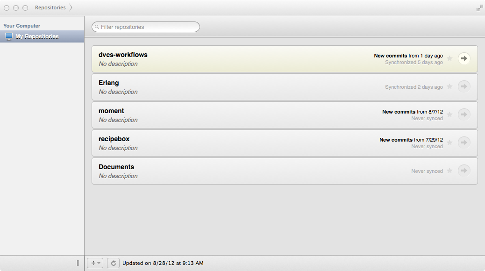
When you select a repository you are presented with a panel with four buttons on the side, that cover most of the options that you would want to do.
The top button, will show the history of the current branch. You can select a given commit and see the comment as well as what was changed in that commit.
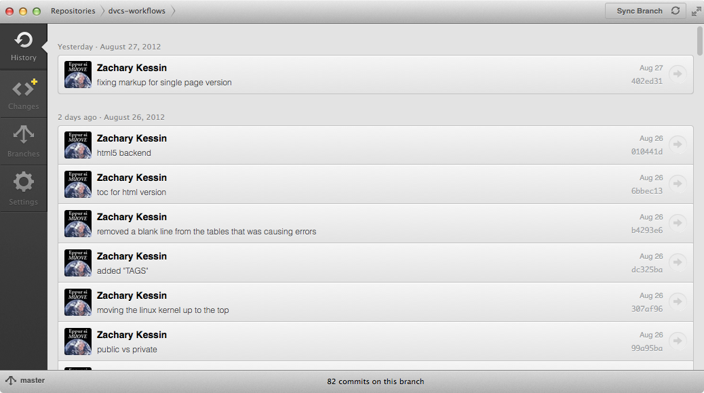
To commit a set of changes go to the second button. The left hand side of the panel will show a list of files that have changed. Select the file or files that you wish to commit, and enter a comment then click the commit button. If you need to review what was changed in a given file that will be shown on the right side.
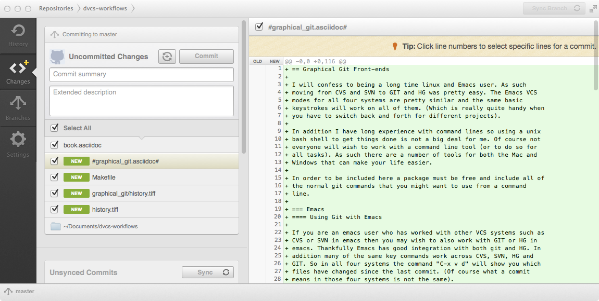
If you have multiple branches (and in many projects you probably should) you can work with those branches in the branches tab. Here you can create a new branch, select which branch to work with and so on. You can also publish a branch to the server.
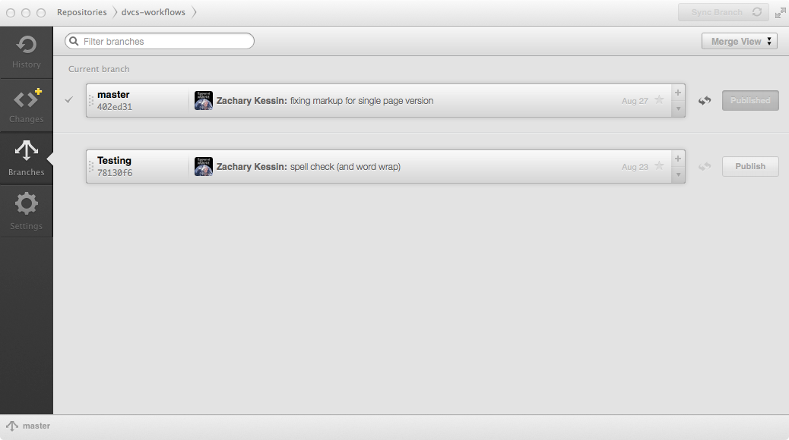
The final tab is the settings tab. From here you can set the remote origin of a repository. In addition you can setup the .gitignore file 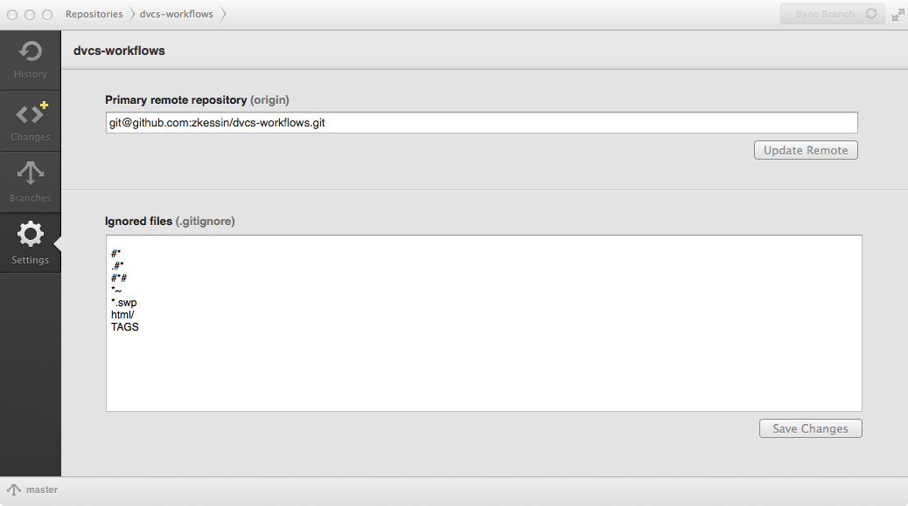
You can also do a push or a pull from the client. to do a push hit command-P and a pull can be done with Command-Shift-P. The default way to sync with a server from GitHub for mac is to use the "Sync" button which will do a push and a pull at once.
Nicely it will also work with other git clients (as you would expect) so you can commit changes with eclipse and review them with the GitHub client.